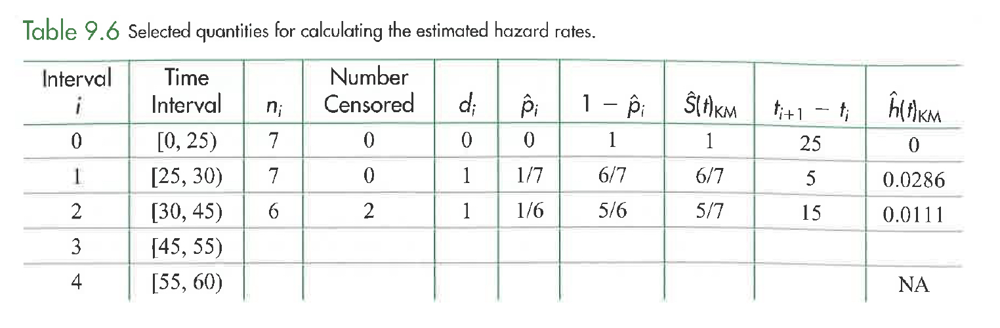

Clicker Q
to go with Practicing Statistics by Kuiper & Sklar. Math 150 - Methods in Biostatistics.
In terms of the prerequisite for Math 150, Methods in Biostatistics, you should know at least a little bit (hopefully a lotta bit) about the following topics.
- Hypothesis test, confidence interval, sample mean, central limit theorem, standard deviation, standard error of a statistics, p-value, t-test, chi-squared test.1
- Never heard of it
- Heard of it, but don’t know anything about it
- Know a little about it (or did once)
- Know something about it
- Confident about it
In terms of the prerequisite for Math 150, Methods in Biostatisitcs, you do not need to know the following topics
- Interaction, simple linear regression, multiple linear regression, logistic regression, survival analysis, R.2
- Never heard of it
- Heard of it, but don’t know anything about it
- Know a little about it (or did once)
- Know something about it
- Confident about it
- R / R Studio / Quarto3
- all good
- started, progress is slow and steady
- started, very stuck
- haven’t started yet
- what do you mean by “R”?
- Git / GitHub4
- all good
- started, progress is slow and steady
- started, very stuck
- haven’t started yet
- what do you mean by “Git”?
- Where can I get feedback on my HW assignments / quizzes?5
- prof will return paper versions
- on Gradescope
- on Canvas
- on GitHub
- Which of the following includes talking to the remote version of GitHub?6
- changing your name (updating the YAML)
- committing the file(s)
- pushing the file(s)
- some of the above
- all of the above
- The Central Limit Theorem (CLT) says:7
- The sample average (statistic) converges to the true average (parameter)
- The sample average (statistic) converges to some point
- The distribution of the sample average (statistic) converges to a normal distribution
- The distribution of the sample average (statistic) converges to some distribution
- I have no idea what the CLT says
- The p-value is the probability:8
- that the null hypothesis is true given the observed data.
- of data as or more extreme than the observed data given that the null hypothesis is true.
- Why do we use a t distribution (instead of a z / normal distribution) in the t-test?9
- the technical conditions don’t hold
- the means are quite variable
- we like the letter t
- we have two samples
- we don’t know the true standard deviation parameter
- What happens if a t-test is used but isn’t appropriate (technical conditions don’t hold)?10
- the p-value isn’t actually the probability of our data or more extreme if H0 is true.
- the software won’t give a p-value as output
- the rejection region needs to be calculated in the opposite direction
- the world blows up
- We use linear regression to run a test of means (\(x_i = 0\) for controls, group 1; \(x_i = 1\) for cases, group 2) What is: \(\sum_{i=1}^n x_i?\)11
- \(n\)
- \(n_1\)
- \(n_2\)
- \(n_1 \cdot \overline{y}_1\)
- \(n_2 \cdot \overline{y}_2\)
- We use linear regression to run a test of means (\(x_i = 0\) for controls, group 1; \(x_i = 1\) for cases, group 2) What is: \(\sum_{i=1}^n x_iy_i?\)12
- \(n\)
- \(n_1\)
- \(n_2\)
- \(n_1 \cdot \overline{y}_1\)
- \(n_2 \cdot \overline{y}_2\)
- The regression technical conditions include:13
- The Y variable is normally distributed
- The X variable is normally distributed
- The residuals are normally distributed
- The slope coefficient is normally distributed
- The intercept coefficient is normally distributed
We need the technical conditions to hold in order to calculate \(b_0\) and \(b_1.\)14
- TRUE
- FALSE
- It depends
- Why do we check technical conditions?15
- so that the inference is valid
- so that the estimates are valid
- so that the p-value is more likely to be small
- so that the confidence level is right
- for fun
- When writing the regression equation, why is there a hat \((\ \hat{} \ )\) on the response variable?16
- because the prediction is an estimate
- because the prediction is an average
- because the prediction may be due to extrapolation
- a & b
- all of the above
- With a strong correlation and very small p-value, what can we conclude about happiness and life expectancy?17
- happiness causes longer lives
- longer lives cause happiness
- happiness and longer life are correlated
- happiness and longer life are perfectly predictive
- happiness and longer life are unrelated
- If there is no relationship in the population (true correlation = 0), then r = 0.18
- TRUE
- FALSE
- If there is no relationship in the population (true slope \(\beta_1 = 0\)), then \(b_1=0\).19
- TRUE
- FALSE
- Smaller variability around the regression line \((\sigma):\)20
- increases the variability of \(b_1\).
- decreases the variability of \(b_1\).
- doesn’t necessarily change the variability of \(b_1\).
- Smaller variability in the explanatory variable (SD(X) = \(s_X):\)21
- increases the variability of \(b_1\).
- decreases the variability of \(b_1\).
- doesn’t necessarily change the variability of \(b_1\).
- A smaller sample size \((n):\)22
- increases the variability of \(b_1\).
- decreases the variability of \(b_1\).
- doesn’t necessarily change the variability of \(b_1\).
- We transform our variables…23
- … to find the highest \(r^2\) value.
- … when the X variable is not normally distributed.
- … to make the model easier to interpret.
- … so that the technical conditions are met.
- In the Botox and Pain Relief example, the p-value is calculated. What does “probability” refer to?24
- random allocation
- random sample
p-value = probability of the observed data or more extreme given the null hypothesis is true.
- “Observed data or more extreme” is:25
- fewer than 9
- 9 or fewer
- 9 or more
- more than 9
- What is the mean value of the null sampling distribution for the number of Botox therapy who showed pain reduction?26
- 0
- 9
- 5.3
- 11
- 15
- What conclusion would you draw from the Back Pain and Botox study?27
- Not enough evidence to conclude that Botox is more effective than the placebo.
- Strong evidence that Botox is equally as effective as the placebo.
- Strong evidence that Botox is more effective than the placebo.
- If we consider those in the study with back pain to be representative of all people with back pain, what would you conclude about the percentage of people who will have reduced back pain if they use Botox?28
- Substantially greater than 50%
- Substantially less than 50%
- Close to 50%
- If the null hypothesis is true, the observed counts will equal the expected counts.29
- True
- False
- To reject the null hypothesis we want to see30
- a small \(X^2\) value
- a big \(X^2\) value
- A chi-square test has a31
- one-sided alt hypothesis, and we only consider the upper end of the sampling distribution
- one-sided alt hypothesis, and we consider both ends of the sampling distribution
- two-sided alt hypothesis, and we only consider the upper end of the sampling distribution
- two-sided alt hypothesis, and we consider both ends of the sampling distribution
- Material check-in
- So far, so good
- Concepts are good, R is confusing
- R is good, concepts are confusing
- Everything is confusing
- People check-in
- So far, so good
- I can go to office hours / mentor sessions, but I didn’t happen to this week.
- I can’t make the scheduled office hours / mentor sessions
- I’m looking for someone to study with
- I know where to find: the solutions to the worksheets, the clicker questions (with solutions), and the HW solutions32
- TRUE
- FALSE
See Canvas front page for anonymous survey / feedback for the class. Also, if you are looking for people to work with, please contact me directly (non-anonymously!) so that I can connect you to people.
- Relative Risk is33
- the difference of two proportions
- the ratio of two proportions
- the log of the ratio of two proportions
- the log of the difference of two proportions
- Odds Ratio is34
- the difference of two proportions
- the ratio of two proportions
- the difference of two odds
- the ratio of two odds
- In finding a CI for RR = p1/p2, why is it okay to exponentiate the ends of the interval for ln(p1/p2)?35
- Because if ln(p1/p2) is in the original interval, p1/p2 will be in the exponentiated interval.
- Because taking the natural log of the RR makes the distribution approximately normal.
- Because the natural log compresses values that are bigger than 1 and spreads values that are less than 1.
- Because we can get exact p-values using Fisher’s Exact Test.
- In order to find a CI for the true OR, our steps are:36
- find \(\widehat{\ln(\mbox{OR})}\)
- add \(\pm \ z_{1-\alpha/2} \sqrt{\frac{1}{n_1 \hat{p}_1 (1-\hat{p}_1)} + \frac{1}{n_2 \hat{p}_2 (1-\hat{p}_2)}}\)
- take exp of the endpoints
- because the sampling distribution of \(\widehat{\mbox{OR}}\) is normal
- because OR is typically greater than 1
- because the \(\ln\) transformation makes the sampling distribution almost normal
- because OR is invariant to the choice of explanatory or response variable
- Sample 1,000,000 people who are over 6’ tall and 1,000,000 people who are under 6’ tall. Record if the person is in the NBA. What is measurable?37
- P(NBA if 6’ tall)
- P(6’ tall if in the NBA)
- both
- neither
- Sample 100 people who are in the NBA and 100 people who are not in the NBA. Record if the person is over 6’ tall. What is measurable?38
- P(NBA if 6’ tall)
- P(6’ tall if in the NBA)
- both
- neither
- Sample 10,000,000 people. Record their height and whether or not they are in the NBA. What is measurable?39
- P(NBA if 6’ tall)
- P(6’ tall if in the NBA)
- both
- neither
From the NYT, March 21, 2023, https://www.nytimes.com/2023/03/21/sports/basketball/tall-basketball-march-madness.html
American men who are between 6 feet and 6-2 — significantly taller than the 5-9 average — have about a five in a million chance of making the N.B.A., according to “The Sports Gene,” a 2013 book by David Epstein about the science of athletic performance. But if you hit the genetic lottery and happen to be 7 feet tall, your chances of landing in the N.B.A. are roughly one in six. (There are 38 players on active rosters who are 7 feet or taller, according to N.B.A. Advanced Stats; the average height of an N.B.A. player is 6 feet 6.5 inches.)
https://davidepstein.com/david-epstein-the-sports-gene/
- Calcium channel blockers have recently been reported to be associated with increased mortality. Cardiac patients who recently died of their heart disease were compared to control cardiac patients with similar disease who survive. Assume such a study had found that 40% of the recent cardiac deaths were taking calcium channel blockers at the time of death, as compared to 25% of the controls.40
- Case-control
- Cohort
- Cross-classification
- It is well known that the use of urinary catheters conveys a substantial risk of urinary tract infection (UTI). A group of physicians believe that, in an intensive care setting, use of one particular type of urinary catheter is more likely to encourage infection than use of other types. They therefore review medical records over a recent period for all uses of urinary catheters in an ICU. They find that 200 new UTIs occurred during 1000 ICU patient-days of catheterization with the suspect type of catheter, as compared to 100 new UTIs during 5000 ICU-patient days of catheterization with all other types. Noting the increased frequency of new UTIs when the suspect catheter type is used, they regard their hypothesis as confirmed. To reduce nosocomial UTIs, they recommend discontinuing use of that type of catheter in the ICU.41
- Case-control
- Cohort
- Cross-classification
- When we select individuals based on the explanatory variable, we cannot accurately measure42
- the proportion of people in the population in each explanatory category
- the proportion of people in the population in each response group
- anything about the population
- confounding variables
- The odds ratio is “invariant to which variable is explanatory and which is response” means:43
- we always put the bigger odds in the numerator
- we must collect data so that we can estimate the response in the population
- which variable is called the explanatory changes the value of the OR
- which variable is called the explanatory does not change the value of the OR
- At the value \(x = -\beta_0 / \beta_1\), the probability of success is:44
- 0
- 0.5
- 1
- depends on \(\beta_0\)
- depends on \(\beta_1\)
- The logistic model gives probability of failure:45
- \(\frac{e^{\beta_0+ \beta_1 x}}{1+ e^{\beta_0+ \beta_1 x}}\)
- \(\frac{1}{1+ e^{\beta_0+ \beta_1 x}}\)
- \(e^{\beta_0+ \beta_1 x}\)
- \(e^{-(\beta_0+ \beta_1 x)}\)
- \(\beta_0+ \beta_1 x\)
- The logistic model gives odds of success:46
- \(\frac{e^{\beta_0+ \beta_1 x}}{1+ e^{\beta_0+ \beta_1 x}}\)
- \(\frac{1}{1+ e^{\beta_0+ \beta_1 x}}\)
- \(e^{\beta_0+ \beta_1 x}\)
- \(e^{-(\beta_0+ \beta_1 x)}\)
- \(\beta_0+ \beta_1 x\)
- The logistic model gives odds of failure:47
- \(\frac{e^{\beta_0+ \beta_1 x}}{1+ e^{\beta_0+ \beta_1 x}}\)
- \(\frac{1}{1+ e^{\beta_0+ \beta_1 x}}\)
- \(e^{\beta_0+ \beta_1 x}\)
- \(e^{-(\beta_0+ \beta_1 x)}\)
- \(\beta_0+ \beta_1 x\)
- With a logistic regression model, the relative risk of success (for a one unit increase in X) is:48
- \(- \beta_0/\beta_1\)
- \(\beta_0+ \beta_1 x\)
- \(e^{\beta_0+ \beta_1 x}\)
- a non-linear function of X (which depends on X )
- If we want the relative risk of survival (for a one unit increase in X) to be independent of X, we should use which link:49
- linear
- logistic
- complementary log-log
- log-linear
- You take a sample of size 4 from a binary population and get: FSFF. (failure, success, failure, failure) What is your guess for p = P(success)?50
- 0.05
- 0.15
- 0.25
- 0.5
- 0.75
- In a logistic regression model, the variability is given by51
- Normal Y given X
- Binomial Y given X
- Bernoulli Y given X
- Poisson Y given X
- When trying to find estimates for \(\beta_0\) and \(\beta_1\), we maximize the likelihood. \[\prod_{i=1}^n \bigg(\frac{e^{\beta_0+ \beta_1 x_i}}{1+ e^{\beta_0+ \beta_1 x_i}}\bigg)^{y_i}\bigg(\frac{1}{1+ e^{\beta_0+ \beta_1 x_i}}\bigg)^{1 - y_i}\] Take the derivative with respect to which variable(s):52
- X
- Y
- \(\beta_0\)
- \(\beta_1\)
- \(\beta_0\) and \(\beta_1\)
- Maximum likelihood estimation seeks to:53
- Find the data which are most likely under the model.
- Find the parameters which are most likely under the model.
- Find the parameters which make the data most likely under the model.
- Find the data which make the parameters most likely under the model.
- We use maximum likelihood estimation because:54
- It gives an principled approach for estimating the parameters.
- The estimates are asymptotically normally distributed.
- The estimates are always easy to compute.
- All of the above.
- Some of the above.
- We know that for a given data set (with MLEs of \(b_0\),\(b_1\)):55
- \(L(b_0,b_1)< L(b_0,\beta_1=0)\) always
- \(L(b_0,b_1)> L(b_0,\beta_1=0)\) always
- \(L(b_0,b_1) \leq L(b_0,\beta_1=0)\) always
- \(L(b_0,b_1) \geq L(b_0,\beta_1=0)\) always
- In a logistic regresion if \(H_0\) is true, what is the probability of success?56
- \(p_0\)
- \(\frac{e^{b_0}}{1 + e^{b_0}}\)
- \(\frac{e^{b_1}}{1 + e^{b_1}}\)
- \(e^{b_0}\)
- \(\frac{e^{b_0 + b_1 x_i}}{1 + e^{b_0 + b_1 x_i}}\)
- Which is the correct logistic regression model to predict disease status based on snoring (never, occasionally, often, always): \(X_1 = 1\) for occasionally; \(X_2 = 1\) for often; \(X_3 = 1\) for always.57
- logit\((p) = \beta_0\)
- logit\((p) = \beta_0 + \beta_1 X\)
- logit\((p) = \beta_0 + \beta_1 X_1 + \beta_2 X_2 + \beta_3 X_3\)
- logit\((p) = \beta_0 + \beta_1 X_1 + \beta_2 X_2 + \beta_3 X_3 + \beta_4 X_4\)
- logit\((p) = \beta_0 + \beta_1 (X_1 + X_2 + X_3)\)
- How many parameters did we estimate in the HERS worksheet with the additive model?58
- 1
- 3
- 4
- 2757
- 2761
- How many parameters did we estimate in the HERS worksheet with the interaction model?59
- 3
- 4
- 6
- 7
- 12
- What are the df for the LRT addressing whether interaction is needed in the HERS worksheet?60
- 2
- 3
- 2760
- 2754
- 2757
- (Bird nest example) How many parameters do we estimate when considering Length as a categorical variable? (the only variable)61
- 0
- 1
- 2
- 33
- 34
- (Bird nest example) How many df for the LRT addressing whether Length (as a categorical variable) belongs in the model?62
- 0
- 1
- 2
- 33
- 34
- (Bird nest example) How many df for the LRT addressing whether Incubate and Color belong in the model (given Length is determined to be in the model)?63
- 0
- 1
- 2
- 3
- 4
- An interaction term in a multiple logistic regression model may be used when:64
- the model fit is poor.
- there is a quadratic relationship between the response and explanatory variables.
- neither one of two explanatory variables contribute significantly to the regression model.
- the relationship between X1 and P(success) changes for differing values of X2.
- The interpretations of the main effects (on their own) make sense only when the interaction component is not significant.65
- TRUE
- FALSE
- If the interaction is significant but the main effects aren’t:66
- report on the significance of the main effects
- remove the main effects from the model
- avoid talking about main effects on their own
- test whether the main effects are significant without interaction in the model
- With two variables of interest, what should you test first?67
- Variable 1.
- Variable 2.
- The interaction between variables 1 and 2.
- None of the above.
- Consider variable 1 is continuous and variable 2 has 4 levels. How many degrees of freedom are associated with the drop in deviance test (LRT) of their overall interaction?68
- 1
- 2
- 3
- 4
- 5
- When selecting variables, it is important that69
- The model predicts training data well
- The model predicts test data well
- The coefficients on the variables are all significant
- The relationships between the variables make sense
- To get a sense of the true accuracy of the model, the test data should be assessed (for accuracy)70
- on the first model only.
- on the last model only.
- on every model in the process.
- If I am using all features of my dataset and I achieve 100% accuracy on my training set, but ~70% on testing set, what should I look out for?71
- Underfitting
- Nothing, the model is perfect
- Overfitting
- If I am picking and choosing between features of my dataset and I achieve 30% accuracy on my training set, and ~30% on testing set, what should I look out for?72
- Underfitting
- Nothing, the model is perfect
- Overfitting
- Cross validating will guarantee that the model does not overfit.73
- TRUE
- FALSE
- Suppose we want to compute 10-Fold Cross-Validation error on 200 training examples. We need to compute a model error rate N1 times, and the Cross-Validation error is the average of the errors. To compute each error, we need to train a model with data of size N2, and test the model on the data of size N3. What are the numbers for N1, N2, N3?74
- N1 = 1, N2 = 180, N3 = 20
- N1 = 10, N2 = 180, N3 = 20
- N1 = 10, N2 = 200, N3 = 20
- N1 = 10, N2 = 200, N3 = 200
- N1 = 20, N2 = 180, N3 = 20
- You are reviewing papers for Fancy Conference, and you see submissions with the following claims. Which ones would you consider accepting?75
- My method achieves a training error lower than all previous methods!
- My method achieves a test error lower than all previous methods! (Footnote: When variables are chosen so as to min test error.)
- My method achieves a test error lower than all previous methods! (Footnote: When variables are chosen so as to min CV error.)
- My method achieves a CV error lower than all previous methods! (Footnote: When variables are chosen so as to min CV error.)
- Which model is better (according to ROC)?76
- pink because it goes closer to (1,1)
- pink because it is closer to y=x
- blue because it is farther from y=x
- blue because it is steeper
- neither
- In ROC curve, the x-axis measures77
- True Pos Rate which we want high
- False Pos Rate which we want low
- True Neg Rate which we want high
- False Neg Rate which we want low
- Quiz on 11 topics (you know nothing). Your friends know topics:
A: {1, 2, 3, 4, 5, 6, 7}
B: {8, 9, 10}
C: {1, 2, 3, 4, 8, 10}
D: {5, 6, 7, 9, 11}
Who should you choose to help you answer the questions?78- A
- B
- C
- D
- can’t tell
- Who do you want to choose next?79
A: {1, 2, 3, 4, 5, 6, 7}
B: {8, 9, 10}
C: {1, 2, 3, 4, 8, 10}
D: {5, 6, 7, 9, 11}- A
- B
- C
- D
- can’t tell
- If you can pick two people, who do you pick?80
A: {1, 2, 3, 4, 5, 6, 7}
B: {8, 9, 10}
C: {1, 2, 3, 4, 8, 10}
D: {5, 6, 7, 9, 11}- A, B
- A, C
- A, D
- C, B
- C, D
- Which variable should I put in first for the forward model process?81
LocationNo.eggsColorIncubateNestling
- Which variable should I put in second for the forward model process?82
LocationNo.eggsColorIncubateNestling
- Which variable should I remove first for the backward model process?83
LocationNo.eggsColorIncubateNestling
- Which variable should I remove second for the backward model process?84
LocationNo.eggsColorIncubateNestling
- The variables in the k-variable model identified by forward selection are a subset of the variables in the (k+1)-variable model identified by forward selection.85
- TRUE (always TRUE)
- FALSE (not always TRUE)
- The variables in the k-variable model identified by backward selection are a subset of the variables in the (k+1)-variable model identified by backward selection.86
- TRUE (always TRUE)
- FALSE (not always TRUE)
- The variables in the k-variable model identified by backward selection are a subset of the variables in the (k+1)-variable model identified by forward selection.87
- TRUE (always TRUE)
- FALSE (not always TRUE)
- The variables in the k-variable model identified by forward selection are a subset of the variables in the (k+1)-variable model identified by backward selection.88
- TRUE (always TRUE)
- FALSE (not always TRUE)
- The variables in the k-variable model identified by best-subsets selection are a subset of the variables in the (k+1)-variable model identified by best-subsets selection.89
- TRUE (always TRUE)
- FALSE (not always TRUE)
- In a drop-in-deviance test (LRT), the reduced model corresponds to the null hypothesis being true.90
- TRUE
- FALSE
- In a drop-in-deviance test (LRT), the full model corresponds to the alternative hypothesis being true.91
- TRUE
- FALSE
- With model building:92
- There are many ways to find a good model.
- There is always one right answer.
- There is no end to the fun.
- Can we take a pure math class yet?
- When probability of being able to buy a candy bar is modeled as a function of the number of coins, the coefficient on number of coins is:93
- positive
- negative
- zero
- no intuition exists for being able to answer this question
- When probability of being able to buy a candy bar is modeled as a function of the number of low coins, the coefficient on number of low coins is:94
- positive
- negative
- zero
- no intuition exists for being able to answer this question
- When probability of being able to buy a candy bar is modeled as a function of the number of coins and number of low coins, the coefficient on number of coins is:95
- positive
- negative
- zero
- no intuition exists for being able to answer this question
- When probability of being able to buy a candy bar is modeled as a function of the number of coins and number of low coins, the coefficient on number of low coins is:96
- positive
- negative
- zero
- no intuition exists for being able to answer this question
- If we consider the censored times to be event times, the empirical survival curve will (on average)97
- underestimate the parameter
- overestimate the parameter
- sometimes under and sometimes overestimate the parameter
- If we remove all the censored observations, the empirical survival curve will (on average)98
- underestimate the parameter
- overestimate the parameter
- sometimes under and sometimes overestimate the parameter
- \(n_i - d_i = n_{i+1}\) when:99
- there are no deaths at time \(t_i\)
- there is no censoring at time \(t_i\)
- there are no deaths at time \(t_{i+1}\)
- there is no censoring at time \(t_{i+1}\)
- there is no censoring at time \(t_{i-1}\)
- \(\frac{(n_i - d_i)}{n_i} = 1\) when:100
- there are no deaths at time \(t_i\)
- there is no censoring at time \(t_i\)
- there are no deaths at time \(t_{i+1}\)
- there is no censoring at time \(t_{i+1}\)
- there is no censoring at time \(t_{i-1}\)
- Prop survive > 50 days,
treated(turquoise line)101- ~0.65
- ~0.35
- ~0.45
- we only know it’s bigger than red
- we only know it’s smaller than red


- Kaplan Meier curves (Log-Rank p-value),102
- blue is clearly better
- red is clearly better
- can’t tell because they cross
- can’t tell because the p-value is big
- can’t tell because the p-value is small


- In the log-rank test, why is it okay to consider only one cell of the 2x2 table at time \(t_j\)?103
- Because the row totals are fixed.
- Because the column totals are fixed.
- Because the row and column totals are fixed.
- Because the total number of observations is fixed.
- What does it mean for the log rank test to be more powerful than the Wilcoxon test?104
- log rank is more likely to reject \(H_0\) when \(H_0\) is true.
- log rank is more likely to reject \(H_0\) when \(H_0\) is false.
- log rank is less likely to reject \(H_0\) when \(H_0\) is true.
- log rank is less likely to reject \(H_0\) when \(H_0\) is false.
- The hazard at time \(t\) represents:105
- the probability of the event
- the instantaneous rate of the event
- the relative risk of the event
- the odds ratio of the event
- The last entry in the table for the h(t) column is
NAbecause:106- the last observation was a death
- the last observation was censored
- the time interval is too big
- the time interval is too small

- Censored observations are\(\ldots\)?107
- More important than non-censored ones in survival analysis
- Are assumed to be normally distributed over time
- Are assumed to have the same survival chances as uncensored observations
- Are essential to allow calculation of the Kaplan Meier plot
- Are allocated to the baseline survival curve
- Survival Analysis: for a one unit change of an explanatory variable, the corresponding coefficient \(e^\beta\) represents:108
- baseline survival
- survival ratio
- baseline hazard
- hazard ratio
- In survival analysis, the closest interpretation of the value \(e^\beta\) is:109
- odds
- probability
- time to event
- relative risk
- odds ratio
- Let the event be death. If larger values of the explanatory variable are associated with higher likelihood of survival, the coefficient \((\beta)\) should be 110
- bigger than 1
- smaller than 1
- positive
- negative
- zero
- Let the event be death. If larger values of the variable are NOT associated with higher (or lower) likelihood of survival, the coefficient \((\beta)\) should be111
- bigger than 1
- smaller than 1
- positive
- negative
- zero
- BP violates the “linear HR” condition if:112
- the ln ratio of the hazard curves is not linear with respect to BP
- the ln ratio of the survival curves is not linear with respect to BP
- the effect of BP is to increase the hazard
- the effect of BP is to decrease the hazard
- there is no effect due to BP
- A Cox regression analysis:113
- Is used to analyze survival data when individuals in the study are followed for varying lengths of time.
- Can only be used when there are censored data
- Assumes that the relative hazard for a particular variable is always constant
- Uses the logrank statistic to compare two survival curves
- Relies on the condition that the explanatory variables (covariates) in the model are normally distributed.
- The effect of weight could violate PH if:114
- people of different weights are in control vs treatment group
- people tend to weigh less over time
- the hazard function for weight is not monotonic
- the hazard function changes as a function of weight which is also changing over time
- The effect of treatment could violate PH if:115
- the treatment has no effect
- the treatment produces short term benefits only
- the treatment effect interacts with a different variable, like gender
- there is more than one treatment group
- AIC, BIC, model validation, and stepwise regression are methods for116
- parameter estimation
- variable selection
- If \(\alpha = 0.05\), I would expect 5% of all hypotheses to be rejected.117
- TRUE
- FALSE
- Power is:118
- P(type I error)
- P(type II error)
- 1 – P(type I error)
- 1 – P(type II error)
type I = \(H_0\) true, but we reject
type II = \(H_0\) false, but we fail to reject
power = P(rejecting when \(H_0\) false)
- The p-value is119
- P(\(H_0\) is true | data)
- P(\(H_a\) is true | data)
- P(data | \(H_0\) is true)
- P(data | \(H_a\) is true)
- 1 – P(data | \(H_0\) is true)
RA Fisher (1929) >“… An observation is judged significant, if it would rarely have been produced, in the absence of a real cause of the kind we are seeking. It is a common practice to judge a result significant, if it is of such a magnitude that it would have been produced by chance not more frequently than once in twenty trials. This is an arbitrary, but convenient, level of significance for the practical investigator, but it does not mean that he allows himself to be deceived once in every twenty experiments. The test of significance only tells him what to ignore, namely all experiments in which significant results are not obtained. He should only claim that a phenomenon is experimentally demonstrable when he knows how to design an experiment so that it will rarely fail to give a significant result. Consequently, isolated significant results which he does not know how to reproduce are left in suspense pending further investigation.”
- For hypothesis testing, the problem of multiple comparisons (also known as the multiple testing problem) results from the increase in ________ that occurs when statistical tests are used repeatedly.120
- Type I errors
- Type II errors
- Null hypothesis
- Statistical hypothesis testing
- If \(H_0\) is true, the p-values should be distributed:121
- Uniformly (equal prob) on 0 to 1
- Uniformly on -1 to 1
- Unimodal on 0 to 1
- Skewed left on 0 to 1
- Skewed right on 0 to 1
- Given many many tests (presumably some are null and some are “true”), a good estimate of the number of null tests is:122
- (# p-values > 0.5) / 2
- (# p-values > 0.5) * 2
- (# p-values < 0.5) / 2
- (# p-values < 0.5) * 2
- What do I do if the adjusted p-value is bigger than 1?123
- Leave it unadjusted
- Assign the value of the previous (“smaller”) p-value
- Round it to 1
- Divide by 2
- With Holm’s method, what do I do if the (m+1)^th adjusted p-value is smaller than the m^th adjusted p-value?124
- Leave it unadjusted
- Assign the value of the m^th adjusted p-value to the (m+1)^th adjusted p-value
- Round it to 1
- Divide by 2
- The false discovery rate represents125
- the proportion of true discoveries out of the total tests
- the proportion of true discoveries out of the total discoveries
- the ratio of the number of true discoveries divided by the number of null discoveries
- the number of null discoveries out of the total tests
- the number of null discoveries out of the total discoveries
- FDR and FWER differ in that126
- FDR is a rate and FWER is a probability
- FDR controls the rate of false positives
- FWER controls the probability of getting a false positive
- some of the above
- all of the above
- Which multiple comparisons adjustment gives the highest power?127
- Bonferonni
- Holm
- Benjamini-Hochberg
- Storey (q-values)
- Which stopping criteria is most aggressive with respect to stopping early (i.e., is most likely to stop early)?128
- Bonferonni
- Pocock
- Peto
- O’Brien-Fleming
- Why do we want to stop early?129
- get out positive results sooner
- get out negative results sooner
- use fewer observations (people)
- all of the above
- control the type I error
Footnotes
preferably d or e. maybe c on some of them.↩︎
these are the topics we will be covering. Would be nice if you have heard of them.↩︎
wherever you are, make sure you are communicating with me when you have questions!↩︎
wherever you are, make sure you are communicating with me when you have questions!↩︎
- on Gradescope
- pushing the file(s)
- The distribution of the sample average (statistic) converges to a normal distribution
- of data as or more extreme than the observed data given that the null hypothesis is true.
- we don’t know the true standard deviation parameter
- the p-value isn’t actually the probability of our data or more extreme if H0 is true.
- \(n_2\)
- \(n_2 \cdot \overline{y}_2\)
- The residuals are normally distributed (which induces a., d., and e.). There is nothing in the technical conditions about the distribution of X (remember, X can be binary!).
FALSE. We can always minimize the sums of squares, regardless of whether or not the model is any good.↩︎
- so that the inference is valid (and also for fun). Note that d. so that the confidence level is right is also a correct answer because confidence intervals are all part of the “inference” paradigm.
- due to estimation and average
- happiness and longer life are correlated
- FALSE, there is no reason that the statistic will equal the parameter.
- FALSE, there is no reason that the statistic will equal the parameter.
- decreases the variability of \(b_1\).
- increases the variability of \(b_1\).
- increases the variability of \(b_1\).
- so that the technical conditions are met.
- random allocation
- 9 or more
- 5.3 because (15/31)*11 = 5.3
- Strong evidence that Botox is more effective than the placebo.
- Close to 50% (the point estimate is 0.6)
- False
- a big \(X^2\) value
- two-sided alt hypothesis, and we only consider the upper end of the sampling distribution
The worksheet solutions and clicker questions are on the main course website. The HW solutions are on Canvas under Files.↩︎
- the ratio of two proportions
- the ratio of two odds (what are odds? go back to the class notes to make sure you know what odds are!)
- Because if ln(p1/p2) is in the original interval, p1/p2 will be in the exponentiated interval.
- because the \(\ln\) transformation makes the sampling distribution almost normal
- P(NBA if 6’ tall) (cohort: cannot measure the probability of the explanatory variable given the response)
- P(6’ tall if in the NBA) (case-control: cannot measure the probability of the response variable given a level of the explanatory variable)
- both (cross-classification: can measure all the probabilities)
- case-control (they selected based on people who had died or not)
- cross-classification (they selected all uses of catheters)
- the proportion of people in the population in each explanatory category (tbh, we can’t measure b either, but we can measure the proportion of people in each response group, separated by the explanatory variable)
- which variable is called the explanatory does not change the value of the OR
- 0.5
- \(\frac{1}{1+ e^{\beta_0+ \beta_1 x}}\)
- \(e^{\beta_0+ \beta_1 x}\)
- \(e^{-(\beta_0+ \beta_1 x)}\)
- a non-linear function of X (which depends on X )
- log-linear
- 0.25
- Bernoulli Y given X
- \(\beta_0\) and \(\beta_1\)
- Find the parameters which make the data most likely under the model.
- Some of the above (a. It gives an principled approach for estimating the parameters. and b. The estimates are asymptotically normally distributed.)
- \(L(b_0,b_1) \geq L(b_0,\beta_1=0)\) always
- \(\frac{e^{b_0}}{1 + e^{b_0}}\)
- logit\((p) = \beta_0 + \beta_1 X_1 + \beta_2 X_2 + \beta_3 X_3 + \beta_4 X_4\)
- 4 parameter estimates: \(b_0, b_1, b_2, b_3\)
- 7 parameter estimates: \(b_0, b_1, b_2, b_3, b_4, b_5, b_6\)
- 3 (7 - 4 = 3)
- 34
- 33 (34 - 1 = 33)
- 2 (4 - 2 = 2)
- the relationship between X1 and P(success) changes for differing values of X2.
- TRUE
- avoid talking about main effects on their own
- The interaction between variables 1 and 2. (probably… although there are many schools of thought on how to build models)
- 3 (1 * (4-1) = 3)
- The model predicts test data well
- on the last model only.
- overfitting
- underfitting
- FALSE. CV reduces the effect of overfitting, but at the end of the day, you are still building a model on the dataset at hand, and it is possible that you will overfit that dataet.
- N1 = 10, N2 = 180, N3 = 20
- My method achieves a test error lower than all previous methods! (Footnote: When variables are chosen so as to min CV error.)
- blue because it is farther from the line y=x
- False Pos Rate which we want low
- A
- B
- C and D
- Location has the largest test statistic and correspondingly smallest p-value.
No.eggshas the largest test statistic and correspondingly smallest p-value.
- or e. Hard to say, could have removed
Incubate,Nestling, orTotcare. (I removedNestling.)
- or e. Hard to say, could have removed
Colorhas the smalles test statistic and correspondingly largest p-value.
- TRUE
- TRUE
- FALSE
- FALSE
- FALSE
- TRUE (the coefficient values are forced to be zero)
- FALSE (the null model can exist within the full model because there is flexibility in the values of the coefficients)
- There are many ways to find a good model. Also, c. there is no end to the fun.
- positive
- positive
- positive
- negative
- underestimate the parameter
- sometimes under and sometimes overestimate the parameter. Because censoring and survival time are independent, there isn’t any reason why the censored observations would be different from the other observations. However, removing censored observations isn’t ideal because you lose information.
- there is no censoring at time \(t_i\)
- there are no deaths at time \(t_i\)
- ~0.65
- can’t tell because they cross (and also because d. the p-value is big)
- Because the row and column totals are fixed.
- log rank is more likely to reject \(H_0\) when \(H_0\) is false.
- the instantaneous rate of the event
- the last observation was censored. The reason the hazard is zero is because the width of the time interval is unknown, that is we don’t know when the last event time is.
- Are assumed to have the same survival chances as uncensored observations
- hazard ratio
- relative risk
- negative
- zero
- the ln ratio of the hazard curves is not linear with respect to BP
- Is used to analyze survival data when individuals in the study are followed for varying lengths of time. and c. Assumes that the relative hazard for a particular variable is always constant
- the hazard function changes as a function of weight which is also changing over time
- the treatment produces short term benefits only
- variable selection
- FALSE, we’d expect 5% of all null hypotheses to be rejected
- 1 – P(type II error)
- P(data | \(H_0\) is true)
- Type I errors
- Uniformly (equal prob) on 0 to 1
- (# p-values > 0.5) * 2
- Round it to 1
- Assign the value of the m^th adjusted p-value to the (m+1)^th adjusted p-value
- the number of null discoveries out of the total discoveries
- all of the above
- Storey (q-values)
- Pocock
- all of the above. We restrict our analysis to a situation of controling the type I error. However, that isn’t why we want to stop early. We want to stop early for the other reasons listed.